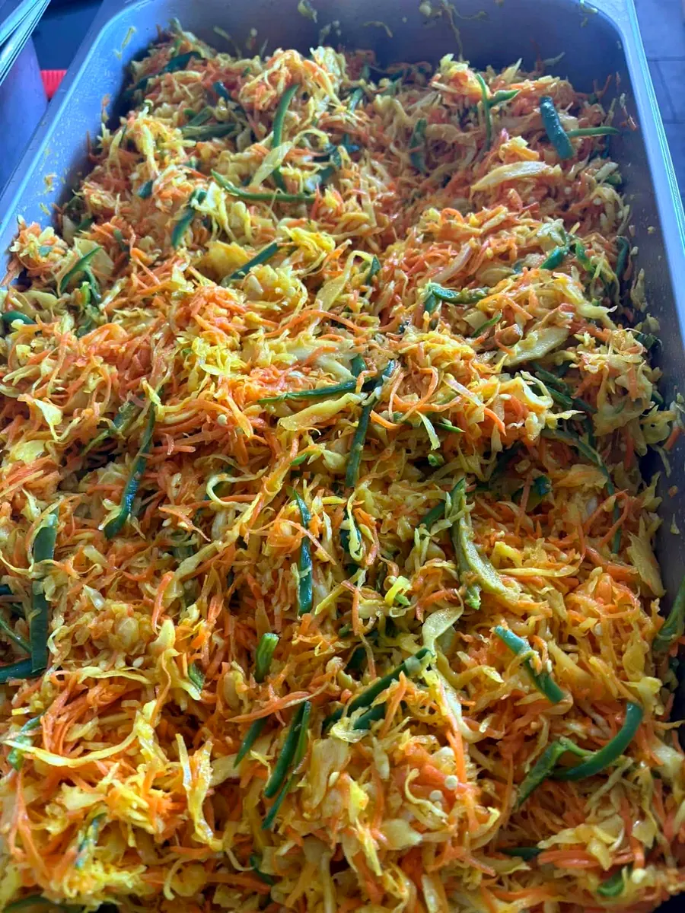
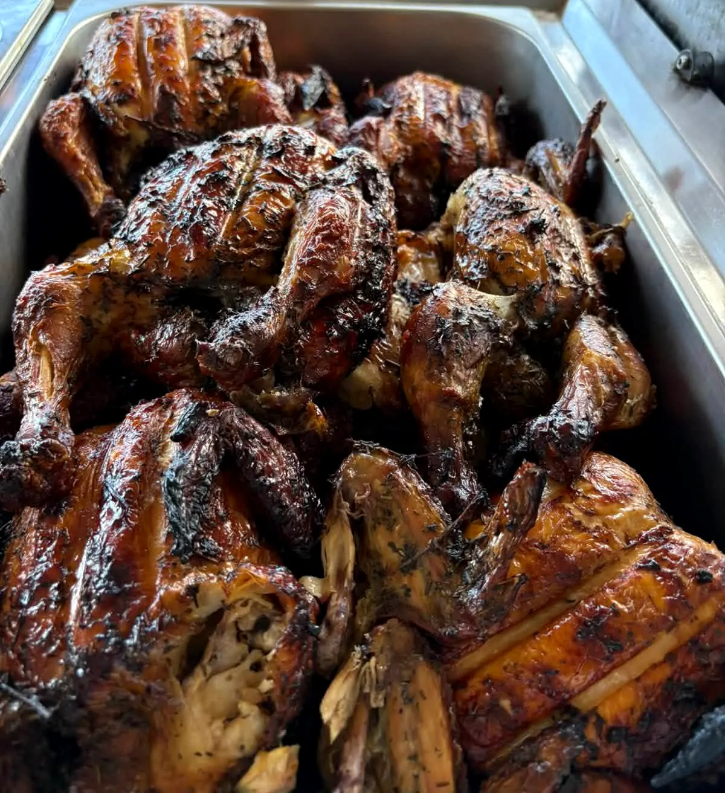
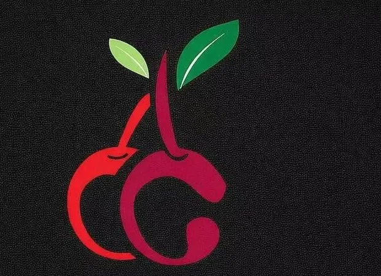
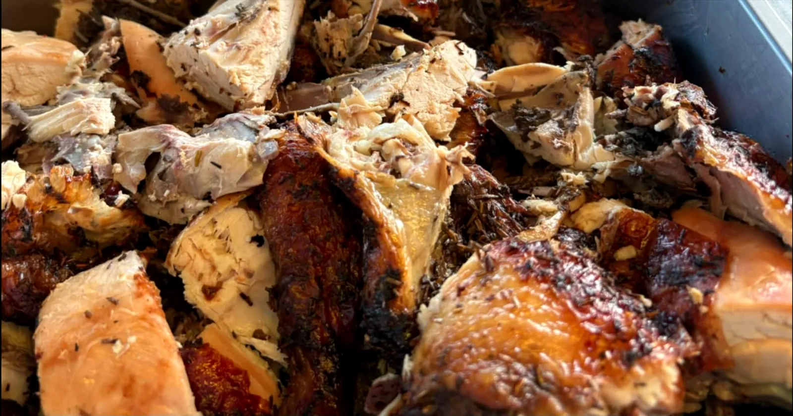
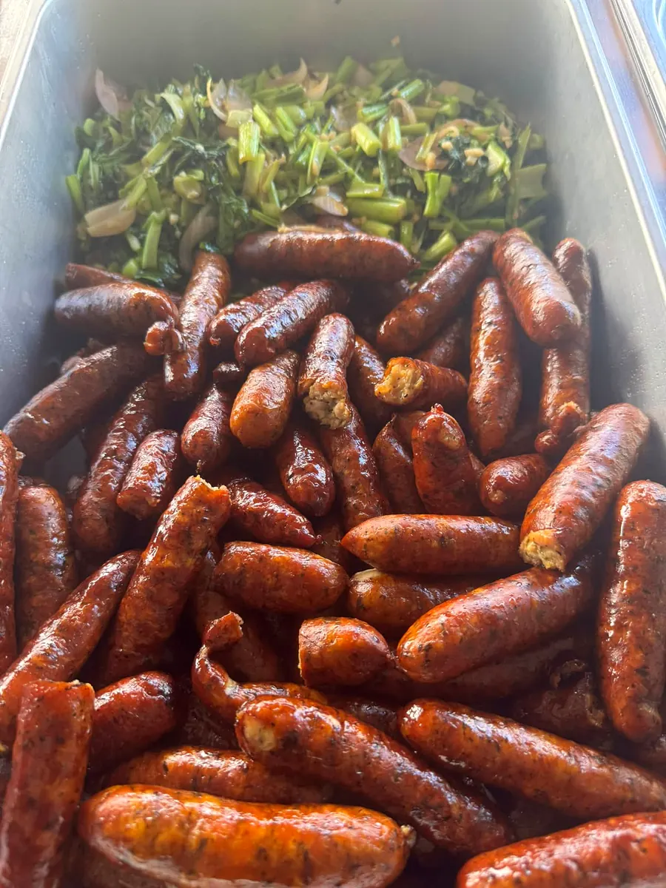
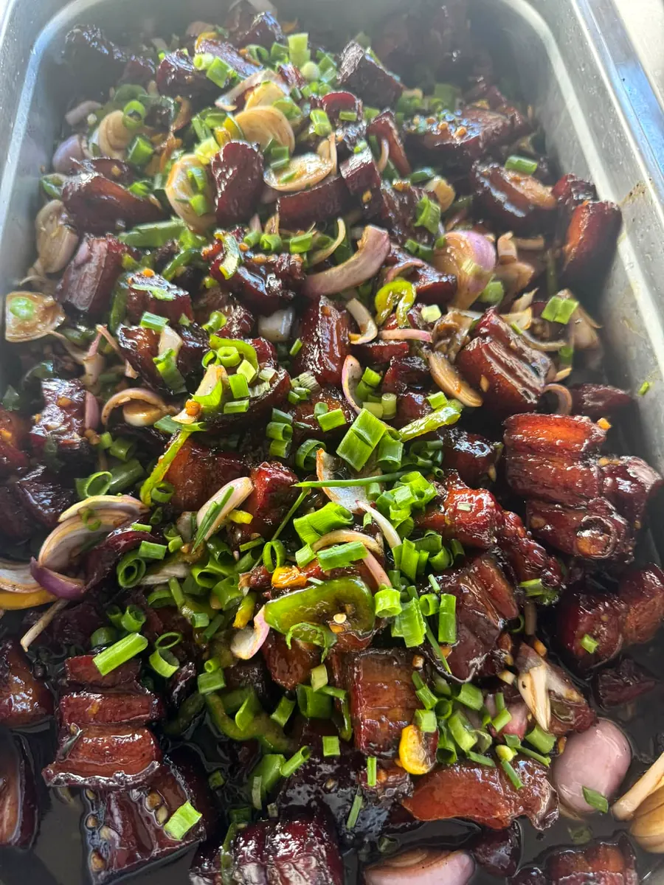
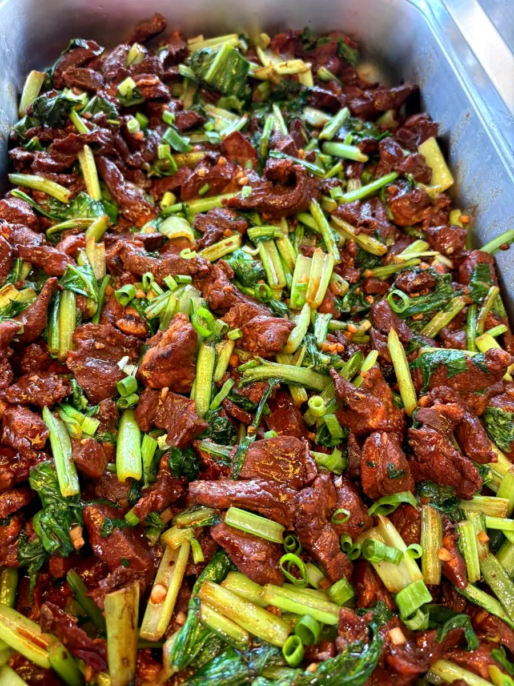
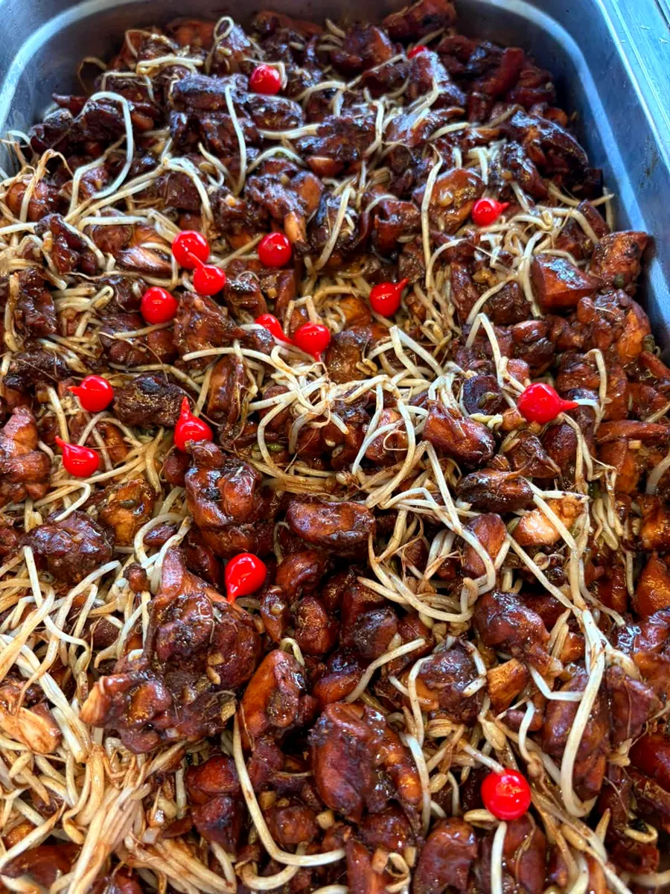

Repas créole & chinois
Le cœur de la maison : des repas du jour généreux, servis le midi comme le soir.
Tous les jours

Resto / Snack · Rivière Saint-Louis
Repas créole & chinois, burgers maison, menu enfant… et les incontournables Américains et Américains spéciaux ! Rendez-vous au 17b route de Cilaos.
L'aventure Cerisier
« C'est grâce à vous que l'aventure continue et grandit ! »
Depuis le samedi 5 septembre 2026, Le Cerisier passe à la vitesse supérieure : la maison vous accueille 7 jours sur 7, midi et soir. Du lundi au vendredi, place aux repas & snacks ; le week-end, les grillades, les achards et la salade russe s'invitent à table.
Merci pour votre fidélité 🍒

À la carte
Les saveurs créoles et chinoises, les burgers maison, les Américains garnis et le menu des enfants : chacun trouve son bonheur au Cerisier.

Le cœur de la maison : des repas du jour généreux, servis le midi comme le soir.
Tous les jours
Grillades, achards, salade russe, et le soir, repas + snack : le rendez-vous gourmand du samedi et du dimanche.
Samedi & dimancheLes incontournables du Cerisier, garnis de jambon de porc et d'emmental mozzarella fondant. Et pour les grosses faims : les Américains spéciaux.
Des burgers faits maison, généreux et gourmands, pour les petites et les grandes faims.
Un menu pensé pour les petits gourmands, pour venir en famille.
Menu du jour, menu du soir
Chaque jour, Le Cerisier partage sur sa page Facebook le menu du midi et le menu du soir. Un aperçu :



← glissez pour voir la suite →
Infos pratiques
7 jours sur 7, midi et soir
Midi : 10h30 – 13h30
Soir : 18h – 21h
Horaires à confirmer sur la page Facebook du Cerisier.
17b route de Cilaos
Rivière Saint-Louis
97421 Saint-Louis, La Réunion
Noël au Cerisier
Pour les grandes tablées de fin d'année, Le Cerisier peut vous régaler. Un petit message pour en parler ensemble, et votre repas de fête prend forme.
Des repas créole & chinois à partager, pour réunir petits et grands autour d'une table bien garnie.
Grillades, achards, salade russe : l'esprit du week-end au Cerisier pour un bon moment entre amis.
Américains spéciaux, burgers maison et menu enfant : la solution facile entre deux courses de Noël.
Un message WhatsApp au 0693 32 44 44, tout simplement.
Contact
5,1 K
gourmands suivent Le Cerisier
Sur Facebook, plus de 5 000 abonnés guettent chaque jour le menu du midi, le menu du soir et les jeux concours de la maison.
À ce soir ! Le Cerisier 🍒